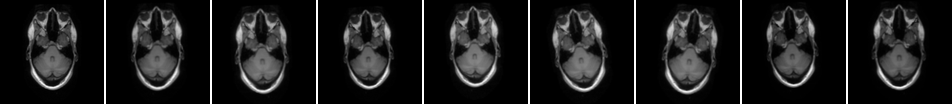

Inside the Network
Chapter 1 drew the encoder and decoder as two boxes. Now let's open the boxes and follow one brain slice through every layer, then see how the whole thing is trained (including the mistake I made the first time).
By the end of this chapter you will know
- how a convolutional encoder shrinks a 128×128 image into a short vector, stage by stage;
- what the bottleneck and the decoder do, and why I upsample instead of using transposed convolutions;
- how training works, what overfitting looked like in my first run, and how augmentation and early stopping fixed it.
1.The shape of the data, from start to finish
Let's start with the big picture before any layer details. The best way to understand this network is to follow the shape of the data as it flows through. Each block below is a tensor: height × width × channels. Step through it.
The tensor shape through the autoencoder (latent dimension 16)
architectureTwo things to notice. First, the encoder side trades space for channels: the image gets smaller (128 → 4) while the number of channels grows (1 → 512). Each channel is a "detector" for some pattern, and deeper channels detect bigger, more abstract patterns. Second, the bottleneck is brutal: 8,192 numbers squeezed into 16. That's where all the compression happens.
2.The encoder, layer by layer
Each encoder stage is two small blocks. The first block uses a 3×3 convolution with stride 2, which means the filter jumps 2 pixels at a time and the output is half the size. The second block keeps the size and refines the features. Every convolution is followed by GroupNorm (keeps the numbers in a healthy range, independent of batch size) and SiLU (the non-linearity, a smooth cousin of ReLU).
So what do these layers actually see? Here are the real activations of my trained encoder on a test slice. For every stage I show the 8 channels that respond most strongly. Pick a slice and watch how the picture changes from "edges of a brain" to "a 4×4 grid of concepts".
Encoder feature maps: the 8 strongest channels at each stage
actual run3.The bottleneck: 8,192 numbers become z
The 4×4×512 block is flattened into a vector of 8,192 numbers and one fully connected (Linear) layer maps it to the latent code:
This one layer is the only thing that changes when I change the latent size. Everything else in the network is identical for every model on this site, which is what makes the comparisons fair. (It is also why the parameter count barely moves: 11.8 M for d = 2, 13.9 M for d = 128.)
4.The decoder: growing the image back
The decoder starts with a Linear layer that turns z back into a 4×4×512 block, and then five stages each double the size. Each stage is a nearest-neighbour upsample (every pixel becomes a 2×2 square) followed by two 3×3 convolutions. The last layer is a 3×3 convolution down to 1 channel and a sigmoid, which squashes every pixel into the range 0 to 1, just like our images.
Decoder feature maps: from 16 numbers back to a brain
actual run · reconstruction5.Implementation
def conv_block(c_in, c_out, stride=1):
return nn.Sequential(nn.Conv2d(c_in, c_out, 3, stride=stride, padding=1, bias=False),
nn.GroupNorm(8, c_out), nn.SiLU())
class Encoder(nn.Module): # 128x128x1 -> d
def __init__(self, d, chans=(32, 64, 128, 256, 512)):
super().__init__()
layers, prev = [conv_block(1, chans[0])], chans[0]
for c in chans: # each stage halves H and W
layers += [conv_block(prev, c, stride=2), conv_block(c, c)]
prev = c
self.features = nn.Sequential(*layers) # -> 4x4x512
self.to_latent = nn.Linear(512 * 4 * 4, d)
def forward(self, x):
return self.to_latent(self.features(x).flatten(1))
class Decoder(nn.Module): # d -> 128x128x1
def __init__(self, d, chans=(512, 256, 128, 64, 32)):
super().__init__()
self.from_latent = nn.Linear(d, 512 * 4 * 4)
layers, prev = [], chans[0]
for c in chans: # each stage doubles H and W
layers += [nn.Upsample(scale_factor=2, mode="nearest"), conv_block(prev, c), conv_block(c, c)]
prev = c
layers.append(nn.Conv2d(prev, 1, 3, padding=1))
self.net = nn.Sequential(*layers)
def forward(self, z):
h = self.from_latent(z).view(-1, 512, 4, 4)
return torch.sigmoid(self.net(h)) # pixels in [0, 1]6.Training, and my first mistake
Every model on this site uses the same recipe:
| setting | value | why |
|---|---|---|
| loss | MSE per pixel | chapter 1 |
| optimiser | AdamW, lr 2×10⁻⁴ | adaptive step size per weight |
| weight decay | 10⁻⁴ | keeps weights small (raised from 10⁻⁵, see below) |
| schedule | cosine, batch 64 | large steps early, small steps late |
| stability | grad clip 1.0, mixed precision | no exploding gradients, faster on GPU |
| stopping | early stopping, patience 15 | stop when validation stops improving |
| hardware | 1 × L40S / H100 | ~17 s per epoch on IXI |
My first run didn't have augmentation or early stopping: it trained every model for 100 epochs and kept the checkpoint with the best validation loss. It looked fine, until I plotted the curves.
First run vs fixed run (AE, z = 16)
actual training logsThe fix: never show the model exactly the same pixels twice
actual pipeline
So the fix was three small changes: augmentation, weight decay 10× stronger, and early stopping. I tested it on one model first (a pilot), saw the validation curve keep improving past epoch 20, and only then re-ran all the models.
Key takeaways
- Encoder: 5 stride-2 stages trade space for channels (128×128×1 → 4×4×512), then one Linear layer makes z.
- Decoder: the mirror image with nearest-neighbour upsampling, ending in a sigmoid.
- Only the bottleneck layer changes between latent sizes, so the comparisons are fair.
- Always plot validation curves: my first run peaked at epoch 6 and silently overfit for 94 more.
References
- Odena, Dumoulin, Olah (2016). Deconvolution and Checkerboard Artifacts. Distill.
- Wu, He (2018). Group Normalization. ECCV.
- Elfwing, Uchibe, Doya (2018). Sigmoid-weighted linear units (SiLU). Neural Networks.
- Loshchilov, Hutter (2019). Decoupled Weight Decay Regularization (AdamW). ICLR.